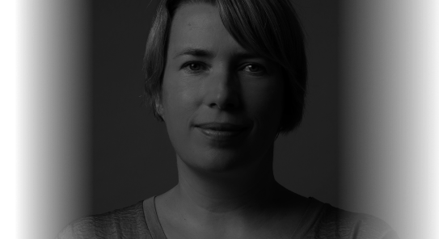

Residentuu:r 2022 investigates the role and potential of musical recordings at the present day, in the decay of CD culture, learn about the needs of nowadays listener. Ensemble U: starts to work on the concept of dynamic, interactive recording, that changes over time on different listens.
"Above" is a randomly generated music art piece. It uses advanced algorithms to generate unique compositions in real time, based on random inputs. The music is composed of multiple layers of samples, which are combined and manipulated in unpredictable ways. Through its use of randomness and technology, "Above" offers a constantly evolving musical experience.
"Vaatenurk" is an experimental generative 3D music installation. It uses advanced algorithms to generate unique musical compositions in real time, based on the movements of the audience. The music is spatialized, creating a multi-dimensional audio experience. Through its use of technology, "Above" offers a glimpse into the potential of generative art.
"AudioMelt" is a music installation that explores the relationship between sound and visual art. It uses algorithms to convert a musical score into a visual image, which is then modified and transformed. The modified image is then sampled back into the music, creating a feedback loop between the audio and visual elements. "AudioMelt" blurs the boundaries between sound and image, creating a unique multimedia experience.